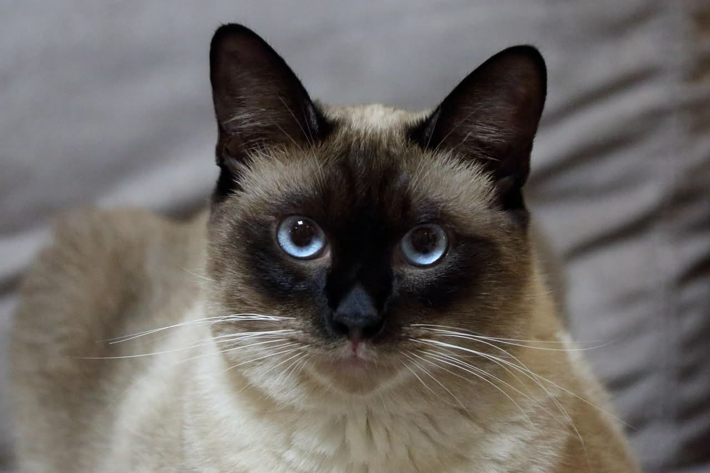

ดอกไม้ประจำมหาวิทยาลัย
ดอกพิกุลทอง
ROMMANAREE UNIVERSITY
อัตลักษณ์และประวัติความเป็นมาของมหาวิทยาลัย
ดอกพิกุลทอง
สีเขียวสัมฤทธิ์คุณ

แมววิเชียรมาศ
“ใต้ร่มเงาปัญญา ชาวประชาชนยืนอย่างเสรี”
“กฎคือราก ปัญญาคือกิ่งก้าน และเสรีภาพคือผลที่เติบโต”
อำนาจทางการเมืองที่ชอบธรรม
ต้องงอกเงยมาจากเจตจำนงของประชาชน
มหาวิทยาลัยร่มนารีก่อตั้งเมื่อปี พ.ศ. 2481 ณ ย่านงามวงศ์วาน จังหวัดนนทบุรี
มหาวิทยาลัยร่มนารี (Rommanaree University) เป็นสถาบันอุดมศึกษาสำคัญแห่งจังหวัดนนทบุรี ตั้งอยู่ในย่านงามวงศ์วาน ถือกำเนิดขึ้นท่ามกลางบริบทการเปลี่ยนแปลงครั้งใหญ่ทางสังคมและการเมืองไทย โดยมุ่งเปิดพื้นที่ทางการเรียนรู้เพื่อสร้างปัญญาชนผู้ยึดมั่นในนิติธรรมและผดุงความยุติธรรมให้แก่สังคมสืบมา
“จงถือเอาความเที่ยงตรงเป็นเสาหลัก ถือเอาความเมตตาเป็นร่มบดบังภัย ปัญญาที่ไร้ซึ่งธรรมะ ย่อมเป็นภัยยิ่งกว่าความเขลา ลาภยศและสรรเสริญจะยั่งยืนได้ ก็ด้วยจิตอันบริสุทธิ์ที่ทรงธรรมะแห่งวิชาชีพไว้ และรับใช้ประชาชนอย่างแท้เท่านั้น”
แรกสุดของสถาบันย้อนกลับไปในยุคก่อตั้งโรงเรียนฝึกหัดและอบรมพื้นฐานในอดีต เริ่มจากการเป็น “โรงเรียนสวนรัตนา” สถาบันการศึกษาขนาดเล็กแบบดั้งเดิมที่เน้นการเรียนการสอนพื้นฐานทั่วไปตามยุคสมัย
ต่อมาเมื่อความต้องการบุคลากรที่มีความรู้ความสามารถเฉพาะทางขยายตัวขึ้น โรงเรียนได้รับการปรับปรุงโครงสร้างและยกระดับขึ้นเป็น “โรงเรียนมหาดเล็กราชบัณฑิต” เพื่อผลิตข้าราชการและเจ้าหน้าที่ผู้มีความรู้ความเชี่ยวชาญเข้าสู่ระบบบริหารแผ่นดิน
กระทั่งถึงจุดเปลี่ยนสำคัญ เมื่อสมเด็จเจ้าฟ้าศรีรัตนนารีทรงเล็งเห็นถึงความสำคัญของการปฏิรูปการศึกษาในระยะยาว จึงทรงเข้ามาปฏิรูปยกระดับสถาบันแห่งนี้อย่างเต็มรูปแบบ โดยทรงชูหมวดวิชา “นิติศาสตร์” ให้เป็นแกนหลักสำคัญในการพัฒนา เพื่อวางรากฐานระบอบการปกครองภายใต้หลักประชาธิปไตย ความเสมอภาค และศักดิ์ศรีความเป็นมนุษย์ พร้อมทั้งได้รับพระราชทานนามสถาบันอย่างเป็นทางการว่า “มหาวิทยาลัยร่มนารี” ในปี พ.ศ. 2481
การประดิษฐานมหาวิทยาลัยร่มนารีในปี พ.ศ. 2481 เกิดขึ้นท่ามกลางสภาวะความผันผวนอย่างรุนแรง ทั้งผลกระทบจากภาวะเศรษฐกิจตกต่ำทั่วโลก หลังการเปลี่ยนแปลงการปกครอง พ.ศ. 2475 รวมถึงคลื่นความตึงเครียดทางการเมืองระหว่างประเทศก่อนปะทุเข้าสู่สงครามโลกครั้งที่สอง
ท่ามกลางกระแสความขัดแย้งและอุดมการณ์ที่ดังเกินกว่าจะคิดอย่างรอบคอบ สมเด็จเจ้าฟ้าศรีรัตนนารีจึงทรงสถาปนามหาวิทยาลัยแห่งนี้ขึ้น เพื่อทำหน้าที่เปรียบเสมือน “ร่มไม้ใหญ่” ที่มิได้ยืนต้านพายุ แต่เปิดพื้นที่ให้ผู้คนได้หยุดพัก ตั้งหลัก และเลือกทิศทางเดินของตนเองด้วยสติและปัญญา
ในขณะที่มหาวิทยาลัยแห่งแรกในยุคสมัยนั้นทำหน้าที่เป็นเวทีหลักทางความคิด การเมือง และการเปลี่ยนผ่านระบอบ มหาวิทยาลัยร่มนารีจึงถูกสถาปนาขึ้นในฐานะมหาวิทยาลัยลำดับที่สองของประเทศ โดยเลือกปักหลัก ณ จังหวัดนนทบุรี (ย่านงามวงศ์วาน) ซึ่งในเวลานั้นถือเป็นพื้นที่รอยต่อสำคัญระหว่างเมืองหลวงกับชนบท นนทบุรีจึงเปรียบเสมือน “เขตปลอดภัยทางการเมือง” ที่ห่างไกลจากแรงปะทะของอุดมการณ์เข้มข้นในศูนย์กลางกรุงเทพฯ แต่ยังคงอยู่ใกล้ชิดพอที่จะรับรู้และขับเคลื่อนความเปลี่ยนแปลงของสังคม
ตั้งแต่อดีตจนถึงปัจจุบัน มหาวิทยาลัยร่มนารีได้จัดการศึกษาหลากแขนงเพื่อตอบสนองการพัฒนาประเทศ โดยเฉพาะคณะนิติศาสตร์ ซึ่งถือเป็นสาขาวิชาหลักอันโดดเด่นและได้รับการยกย่องในวงวิชาการ มหาวิทยาลัยได้หล่อหลอมให้นักศึกษานิติศาสตร์มิได้เรียนรู้เพียงตัวบทกฎหมาย แต่ต้องเข้าใจถึง “จิตวิญญาณแห่งความเมตตา” รู้จักคิดถึงความทุกข์ยากของผู้อื่น และพร้อมกางร่มเงาโอบอุ้มประชาชนโดยไม่กักขังตนเองไว้ในความเห็นแก่ตัว
จนถึงปัจจุบัน มหาวิทยาลัยร่มนารีได้เดินทางเข้าสู่วาระครบรอบ 88 ปีแห่งการสถาปนา โดยยังคงยึดมั่นในพระปณิธานของสมเด็จเจ้าฟ้าศรีรัตนนารีอย่างมั่นคง ด้วยการครองอันดับ 2 ด้านความเป็นเลิศทางอุดมการณ์ ที่มีบทบาทสำคัญในการส่งเสริมประชาธิปไตย ความเสมอภาค และความยุติธรรมในสังคม
ชาวร่มนารีทุกคนยังคงพร้อมที่จะขับเคลื่อนสถาบันแห่งนี้ให้เป็นที่พึ่งพิงของประชาชน ธำรงไว้ซึ่งหลักนิติธรรม และผลิตบัณฑิตผู้เปี่ยมด้วยความรู้ ความรับผิดชอบ และจิตสำนึกต่อสังคม เพื่อก้าวไปข้างหน้าอย่างภาคภูมิใต้ร่มเงาแห่งปัญญาและธรรมะสืบไป